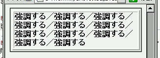
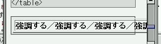

テーブルセル（th, td）要素の子孫要素に white-space: nowrap; を指定しているとき、その要素だけでなくセル内全体が折り返されずに表示されることがある。
<style type="text/css">
td strong {
white-space: nowrap;
}
</style>
<table border="2" width="50%">
<tr>
<td><strong>強調する</strong>／……／<strong>強調する</strong></td>
</tr>
</table>
| 強調する／強調する／強調する／強調する／強調する／強調する／強調する／強調する／強調する／強調する／強調する |
strong要素内（「強調する」という文字列）の途中で折り返されないようにしています。よって、「／」の前後で折り返しが行われるはずです。
WinIE6.0での表示
Opera6.05での表示
white-space: nowrap; を指定するときに white-space:-pre-wrap;（Opera独自拡張）も同時に指定するとテーブルが横に伸びる現象を回避できます。ただし、 white-space: nowrap; による折り返し禁止指定は無効になります。
<style type="text/css">
td strong {
white-space; nowrap;
white-space: -pre-wrap;
}
</style>
<table border="2" width="50%">
<tr>
<td class="a"><strong>強調する</strong>／……／<strong>強調する</strong></td>
</tr>
</table>
| 強調する／強調する／強調する／強調する／強調する／強調する／強調する／強調する／強調する／強調する／強調する |
Opera6.05では不具合の発生が確認されました。Opera7.0では標準・互換モードともに不具合の発生は確認されませんでした。